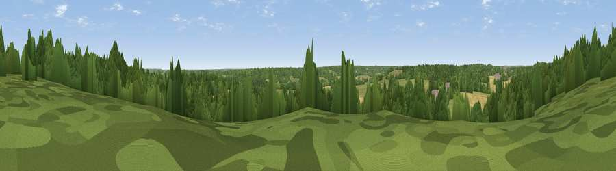

Viewpoint near Stanford Dingley
#42678 in England · top 78% of its area beats it · near Stanford DingleyWhere it is
The exact computed spot (SU 57475 73025). Click the marker for map links.
The view, rendered

A 360° render of this exact spot computed from the terrain model, tree cover and land cover — summer colours, afternoon light, calibrated against photographs of famous viewpoints. Real trees, hedges and buildings will differ in detail.
The panorama
Grey silhouette: terrain skyline in each direction (720 bearings, Earth curvature and refraction included). Dashed green: skyline with trees (+15 m) and buildings (+8 m) as obstacles. Blue strip: how far the ground is visible on each bearing.
Where the view opens
Wedge length = distance to the farthest visible ground on that bearing (vegetation-aware). Rings at 10, 25 and 50 km.
What fills the view
51% woodland · 29% grassland · 18% cropland · 2% built-up
Angular shares of the visible panorama (visual magnitude), not map area. Landscape diversity 0.47 (0–1 Shannon).
Key numbers
More beautiful places nearby
The staircase of upgrades: each row has a higher view potential than everything closer. Driving times are estimates from straight-line distance, calibrated against real road routing — check an actual route before setting out.
| Place | Direction | Drive | Score |
|---|---|---|---|
| Viewpoint near Yattendon | NW · 2 km | ~6 min | 26.4 |
| Viewpoint near Woolhampton | S · 6 km | ~13 min | 29.6 |
| Viewpoint near Upper Bucklebury | SW · 6 km | ~13 min | 36.9 |
| Viewpoint near Compton | NNW · 8 km | ~15 min | 44.3 |
| Viewpoint near Whitchurch-on-Thames | NE · 8 km | ~16 min | 47.5 |
| Viewpoint near Streatley | N · 8 km | ~16 min | 57.2 |
| Viewpoint near Moulsford | N · 10 km | ~19 min | 58.8 |
| Viewpoint near Compton | NNW · 10 km | ~19 min | 64.1 |
51.45330, -1.17424 · source: screening · position refined by local search. Computed location — check access rights before visiting.